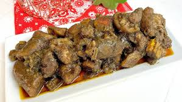

Recette de Congret

Description
Le concrèt est l'un des plats le plus aimé des Camerounais et est particulièrement cuisiner lors de cérémonies ou évènements importants.
Ingrédient
- Plantin non mûr
- Porc
- Huile Rouge
- Condiments
- Sel
Steps
- epulcher le plantain
- préparer le porc
- faire bouillir le plantain
- faire frire le porc
- ajouter les conditments au plantain. puis le porc et le sel
- Attendre la cuisson et servir
Home